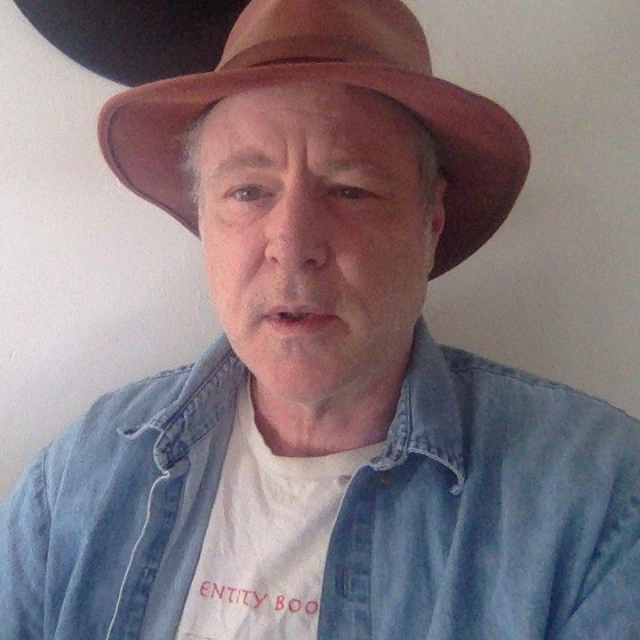

About Us
About Us

Ian Beardsley studied physics at The University of Oregon and worked in astronomy For four years at the state observatory, Pine Mountain Observatory in the high desert East of Bend, Oregon. His name appears on several papers in the Astrophysical Journal.
Proton-Seconds And Natural ... by Ian Beardsley
Theortical Proton Radius by Ian Beardsley
Proton-Seconds by Ian Beardsley
Live As A Universe Unfoldin... by Ian Beardsley
Pi And Phi Make AI And Biol... by Ian Beardsley
Elements as Mathematical St... by Ian Beardsley
Asteroids Meteors 1 to 7 by Ian Beardsley
The Quintessential Elements by Ian Beardsley
Essays In Cosmic Archaeolog... by Ian Beardsley
Five Fold Symmetry by Ian Beardsley
Essays In Cosmic Archaeolog... by Ian Beardsley
Introducing the Concept of ... by Ian Beardsley